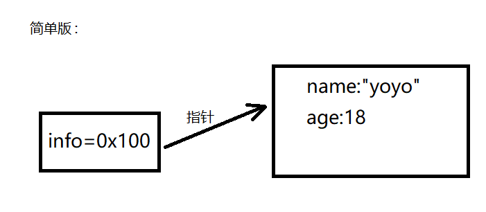
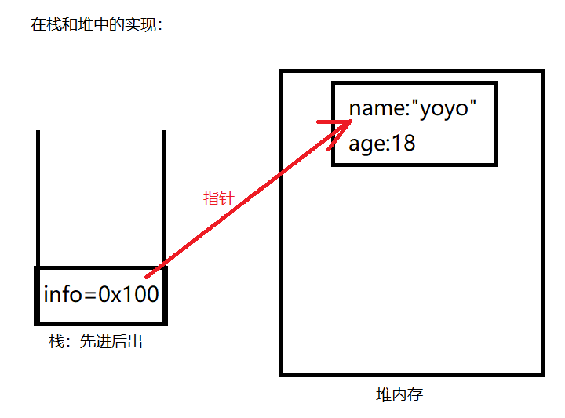
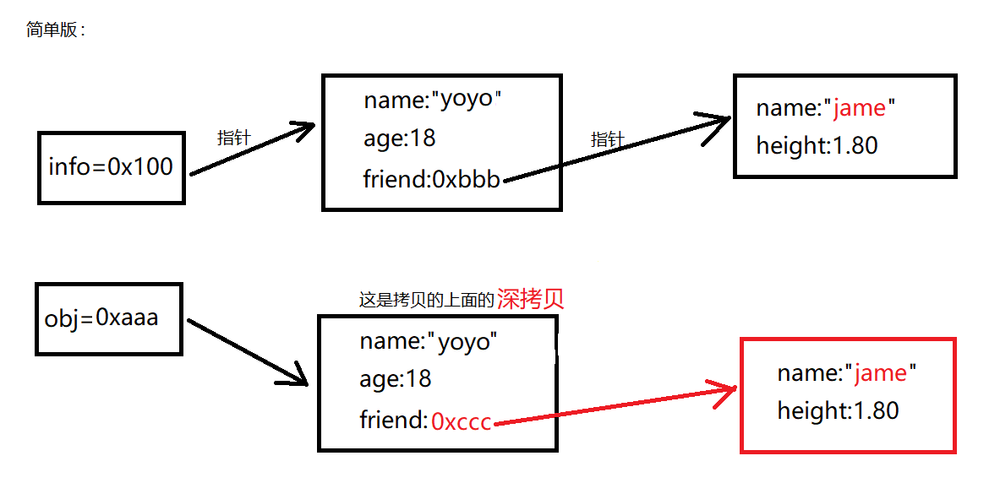
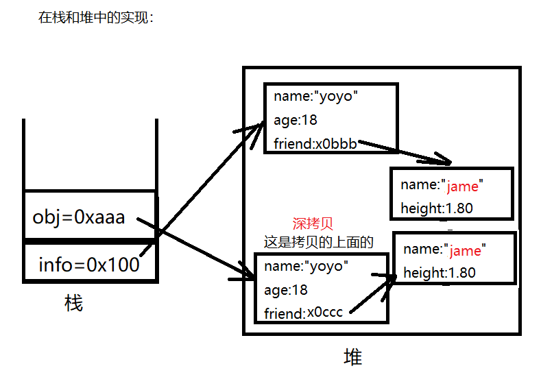

07_对象的引用、浅拷贝、深拷贝
本文是对对象在内存中的三种表现形式进行讲解：
1.对象的引用赋值：
对象是引用类型，引用类型在不同的编程语言中叫法不同，在c语言、c++中引用类型叫指针，在java、javaScript语言中叫引用类型。（本文以javaScript语言为例）
<script>
const info = {name:"yoyo",age:18};
const obj = info;
info.name = "kobe";
console.log(obj.name);//kobe
</script>
在内存中的表现：
首先const info = {name :"yoyo" , age: 18};在内存中实现：
info是对象，一旦是对象，就会在堆内存里创建一个空间，用来存放对象里的相关内容。栈里放的是这块空间的地址，比如0x100（一般内存地址都是16进制，则以0x开头）
 若此时const obj = info，则在内存中的表现为：取出info的内存地址0x100，然后把该内存地址赋值给obj。
若此时info.name="kabe"，则意味着0x100.name=”kobe”
此时打印console.log(obj.name)，结果为kobe，因为obj和info指向的同一个对象。
为什么叫对象的引用赋值？因为这个案例仅是把info对象的引用（地址）赋值给了obj。
2.对象的浅拷贝
第一种类型：
<script>
const info = {name:"yoyo",age:18};
//assign方法会把info对象的所有属性拷贝一份放{}里，然后作为返回值返回给obj
//浅拷贝的方法有很多，我这里选择assign方法做演示
const obj = Object.assign({},info);
info.name = "kobe";
console.log(obj.name) //yoyo
</script>
在内存中的表现：
const info = {name :"yoyo" , age: 18};在内存中的实现过程上面已展示。
const obj = Object.assign({},info);在内存中的实现过程
若此时info.name = "kobe"，改变的是info对象的name，而不是拷贝后对象的name。
打印console.log(obj.name)结果为yoyo，因为他们指向的不是同一个对象。
第二种类型：
<script>
const info = {name:"yoyo",age:18,friend:{name:"kobe",height:1.80}};
//assign方法会把info对象的所有属性拷贝一份放{}里，然后作为返回值返回给obj
//浅拷贝的方法有很多，我这里选择assign方法做演示
const obj = Object.assign({},info);
info.friend.name = "jame";
console.log(obj.frend.name) //jame
</script>
在内存中的表现：
const info = {name:"yoyo",age:18,friend:{name:"kobe",height:1.80}};在内存中的实现过程
const obj = Object.assign({},info);在内存中的实现过程
info.friend.name = "jame";在内存中的实现过程
打印console.log(obj.frend.name)结果为jame，原因是：虽然不是指向的同一个对象，但是不同对象里的对象是同一个。
3.对象的深拷贝
<script>
const info = {name:"yoyo",age:18,friend:{name:"kobe",height:1.80}};
//JSOn.stringify方法把对象转化为字符串
//JSON.parse方法把字符串转化为对象（也就是还原），还原时会在内存中生成新的对象，和原来对象没有任何关系
const obj = JSON.parse(JSON.stringify(info));
info.friend.name = "jame";
console.log(obj.friend.name);//kobe
</script>
上述借助了JSON方法对对象做了深拷贝，深拷贝后的对象和原先的对象没有任何关系，也就是对象里的所有内容都会拷贝一份新的，包括对象里的对象。（这里就不再重复画图了，原理一样，下面是关键步骤图）
 深拷贝实现还有其他方法，比如借助lodash第三方库，（用法是在js中先引入，再使用对应的方法）
<script>
const info = {name:"yoyo",age:18,friend:{name:"kobe",height:1.80}};
//使用lodash库的方法进行深拷贝
const obj = _.cloneDeep(info);
info.friend.name = "jame";
console.log(obj.friend.name);//kobe
</script>
本作品采用 知识共享署名-非商业性使用-禁止演绎 4.0 国际许可协议 进行许可。